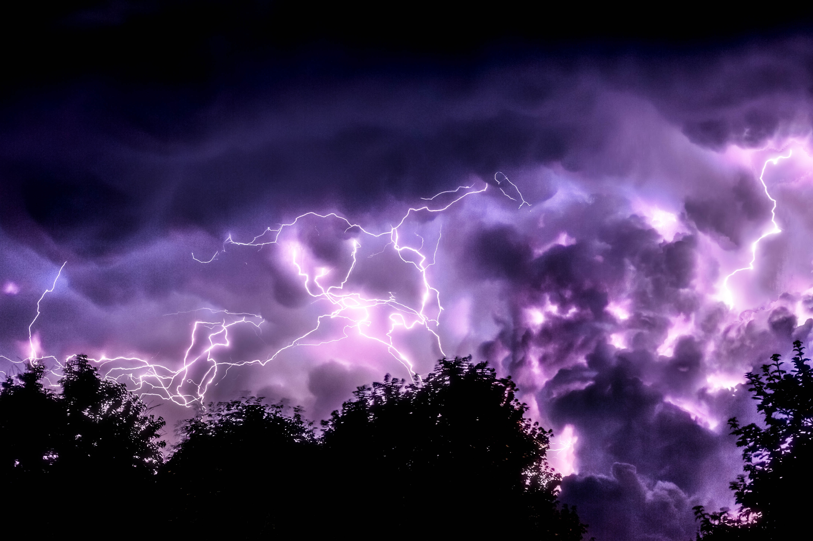

What I want right now is a nice creamy cheesecake maybe from Costco. I love Costco's cheesecake

Sometimes we have this craving that is so out of blue that you wonder someone had intriged into your brain and just pulled one of your cell to cream out that you need to have that food in your mouth at instance.
People call this "craving", and I call it lightening in my brain town. lightening comes before loud sound of thunder, and we human tends to get nervous whenever we see lightening because we have leanred in our lives that thunder always comes after lightening and there is nothing we can do to stop it. Craving is same for me. It comes before I eat, and I know I cannot resist it what so ever.
